My Mission
I strive to pursue meaningful work by driving innovation in propulsion and space exploration technologies. I aim to contribute to advancements that expand human presence beyond Earth while strengthening solutions that benefit life on our planet.
The Website's Purpose
This website serves as a digital portfolio, highlighting my journey, skills, and aspirations. It offers insight into both my professional and personal life while serving as a resource for fellow engineers. I encourage others to build upon the work I’ve done, as I believe there is a significant lack of shared technical knowledge among engineers, particularly in the aerospace sector. My goal is to share as much technical information as permitted under ITAR restrictions. If any of the redacted content here sparks questions or aids your understanding of engineering complexities, feel free to reach out to me for further technical details.
This website will continue to evolve as my projects and web development skills progress. It also serves as a reminder to push through and complete content quickly, as there will always be improvements I’d like to make to this website much like any other project. Many people fall into the "improvement loop," endlessly refining a project and never finishing it. I encourage others to set aside the fear of embarrassment over a project not being perfect—because the regret of leaving it unfinished is far greater.
The Other 2 Hours
Outside of engineering, I spend my time playing rugby for the University of Wisconsin-Madison, training at the gym, and exploring new places. Check out some of my favorite pictures from these experiences below.
 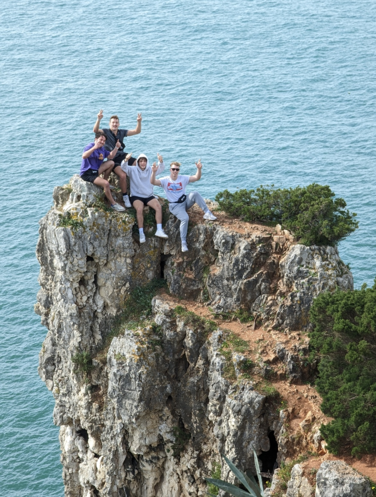
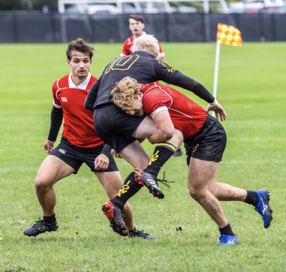
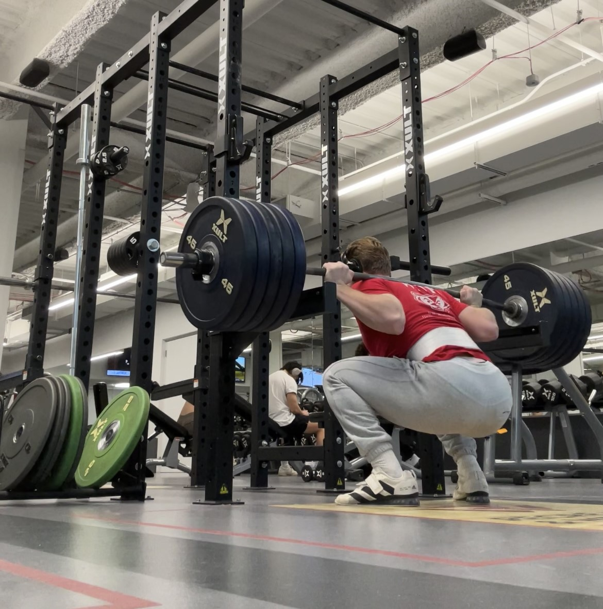
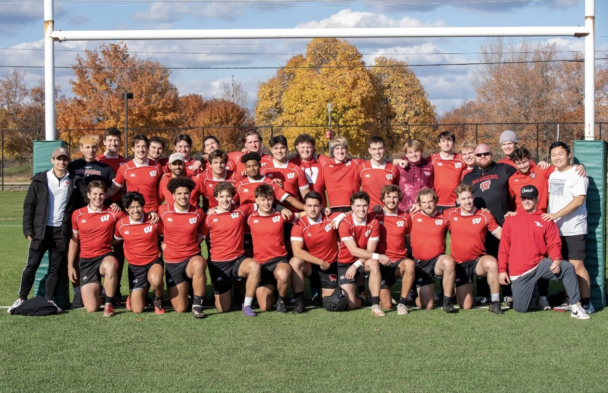
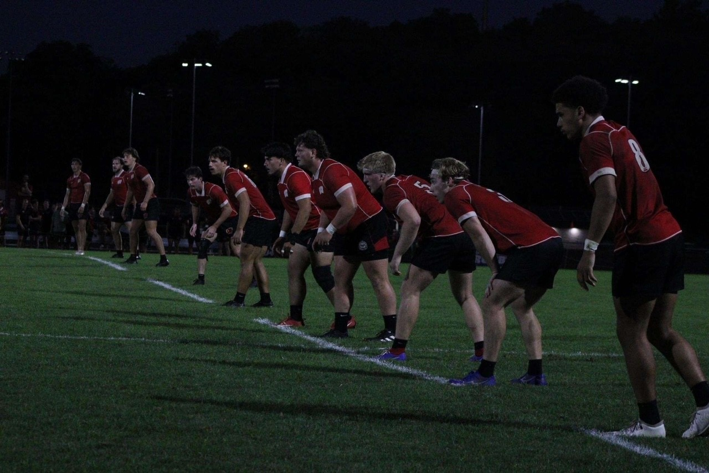
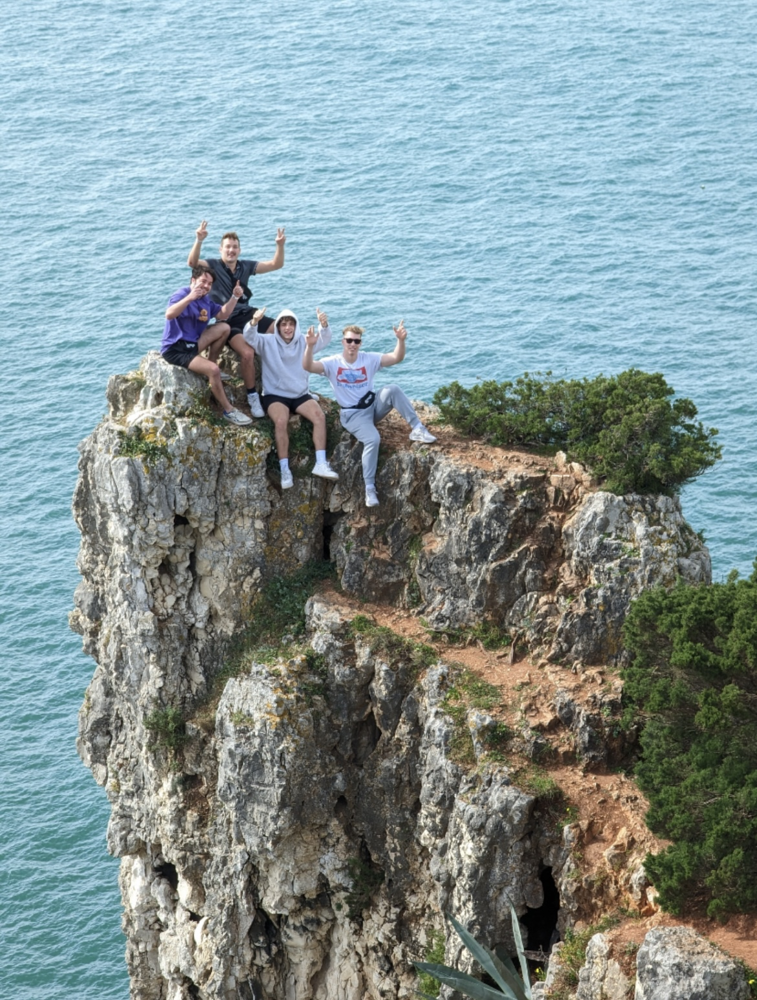
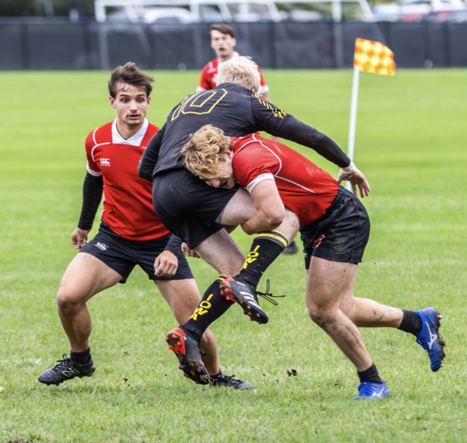
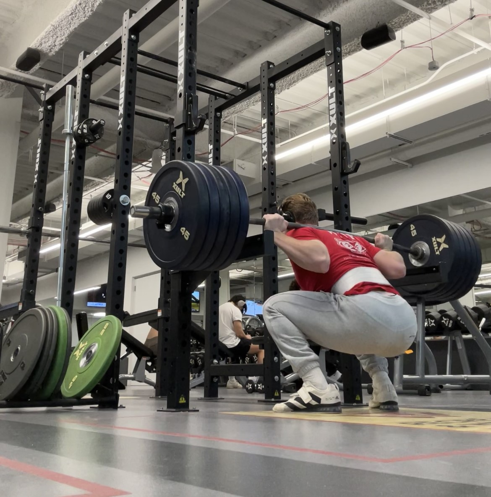
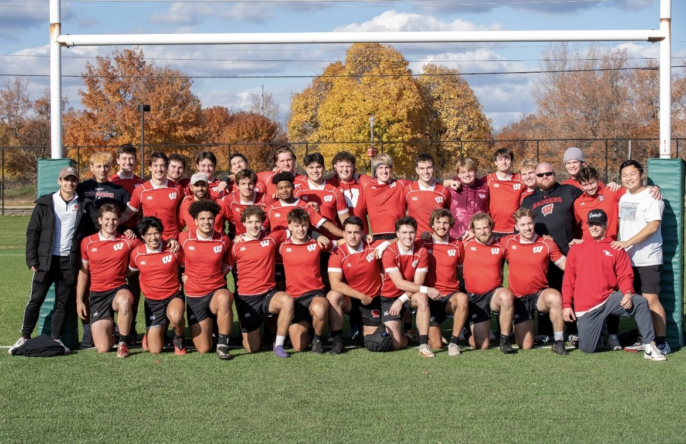
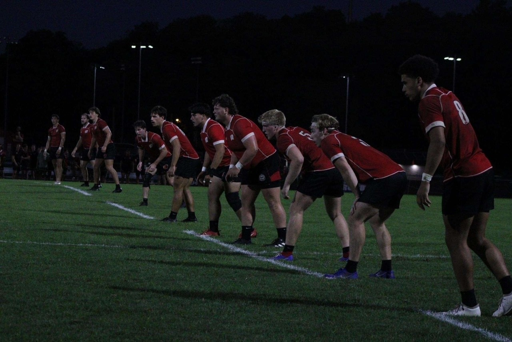
 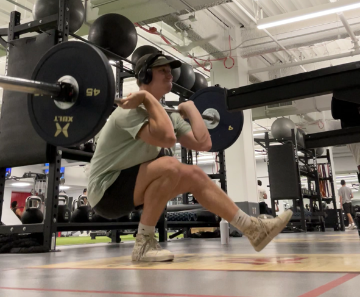
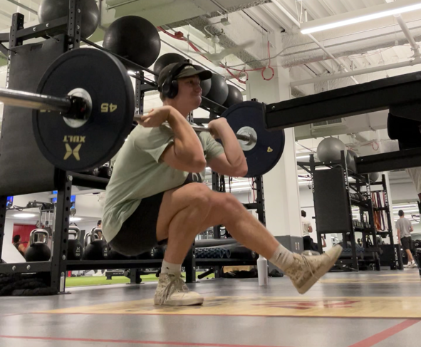